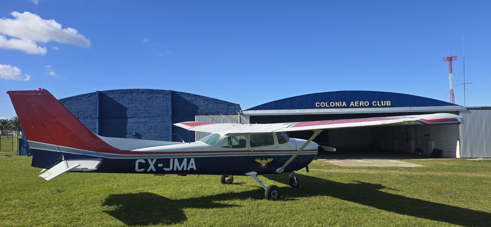

Fundado el 31 de enero de 1941, el Colonia Aero Club ha sido, desde sus inicios, una institución comprometida con el desarrollo de la aviación y el servicio a la comunidad. A lo largo de su historia ha colaborado activamente con organismos públicos y privados, participando en vuelos fotográficos para la Administración Nacional de Puertos en 1948, apoyando al Ministerio de Ganadería, Agricultura y Pesca en la lucha contra la plaga de la langosta en 1946, cooperando con la Intendencia de Colonia y realizando acciones junto a la Liga de Fútbol de Colonia, como el transporte y lanzamiento de la pelota oficial sobre el Estadio Alberto Supicci. Asimismo, cumplió un importante rol en vuelos sanitarios durante la década de 1940 y en misiones científicas junto al Dr. Bautista Rebuffo. El Colonia Aero Club también ha formado a generaciones de pilotos que luego integraron empresas como PLUNA, ARCO y la Fuerza Aérea Uruguaya. Con la modernización de la normativa aeronáutica, la institución se adaptó a los nuevos tiempos creando su propio Centro de Instrucción de Aeronáutica Civil (CIAC), convirtiéndose en el CIAC N.º 16 habilitado por la Dirección Nacional de Aviación Civil e Infraestructura Aeronáutica.
